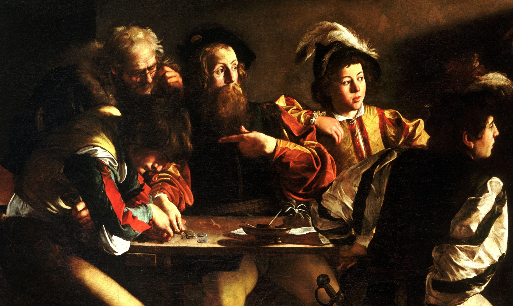
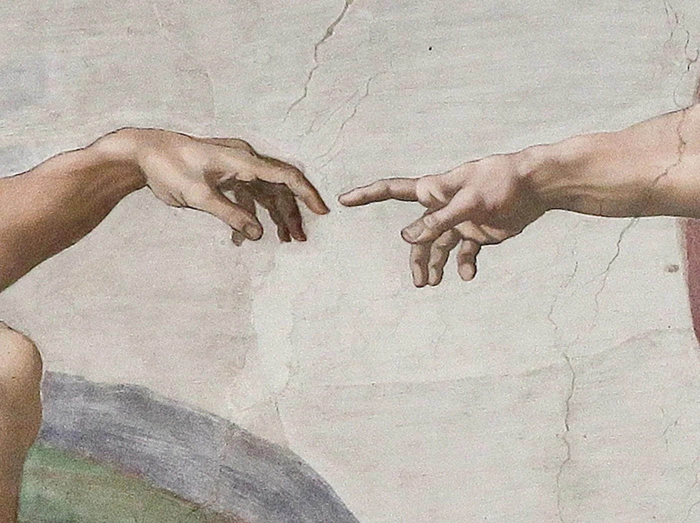
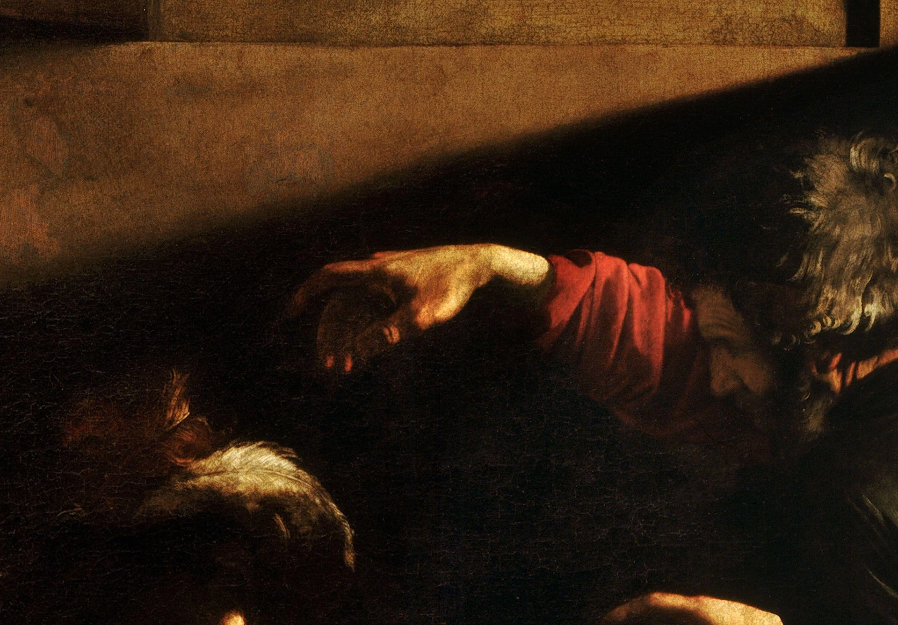

아직 펼치지 않은 카드
아직 펼치지 않은 카드
그림 속 손 · 4성 마태오의 부르심그리스도의 손가락은 누구를 가리키고 있을까요?예수님 손가락이 누구를 가리킬까?
1599~1600년이탈리아 로마 · 산 루이지 데이 프란체시 성당 콘타렐리 예배실
성 마태오의 부르심
1599년 로마, 카라바조는 한 추기경이 남긴 글을 받아 들고 세금 걷는 방의 마태오를 그리기 시작했어요. 그는 어두운 방에 오른쪽 위에서 한 줄기 빛을 들였어요. 등불로 어둠을 문질러, 그 빛이 누구에게 닿는지 찾아보세요.
어두운 방에 빛이 쏙 들어오고, 누군가 손을 뻗어 불렀대. 등불을 들고 어둠을 비춰 볼까? 누가 빛을 받는지 찾아보자.
검수 전 시안이에요(기준서 1판). 장면에는 마태복음 9장, 1599년 계약서에 든 추기경의 지시를 다룬 연구, 브리태니커, 웹 갤러리 오브 아트의 해설, 이탈리아 문화부 문화재 목록, 성당 누리집과 뉴스에 있는 것만 옮겼어요. 기록이 서로 다른 곳은 ‘기록마다 다른 점’에 적었어요. 상상은 ‘눈 감고 상상해 보기’에만 썼어요.
시안 확인용카드 단계 미리 보기
1
한 추기경의 유언
로마에는 프랑스 사람들의 성당, 산 루이지 데이 프란체시가 있어요. 1565년, 프랑스에서 태어난 마티외 쿠앵트렐이 이 성당의 예배실 하나를 샀어요. 이탈리아 사람들은 그를 마테오 콘타렐리라고 불렀어요.
그는 이 예배실을 자기 이름과 같은 성인, 마태오의 이야기로 꾸미려 했어요. 하지만 1585년 추기경이 세상을 떠날 때까지 예배실은 다 꾸며지지 않았어요.

1599년 7월 23일, 카라바조가 이 예배실 양쪽 벽에 걸 큰 그림 두 점을 맡는 계약을 맺었어요. 1600년 대희년 전에 마쳐야 하는 일이었어요. 대희년은 가톨릭교회가 정한 특별한 순례의 해예요.
브리태니커는 이 일을 카라바조가 처음 맡은 큰 공공 작품으로 적어요. 한 변이 3m쯤 되는 큰 그림이에요.
옛날 추기경 할아버지가 성당에 마태오 이야기 그림을 걸고 싶어 했대.
물어보기너는 어떤 이야기를 그림으로 남기고 싶어?
2
계약서가 말한 장면
마태복음은 이 장면을 한 줄로 적어요. 예수가 길을 가다 세관에 앉은 마태오를 보고 자기를 따르라고 하자, 마태오가 일어나 따라갔어요(마태복음 9장 9절). 세관은 세금을 걷는 곳이에요.
추기경은 이 장면을 글로 더 자세히 남겼고, 1599년의 계약서에도 그 글이 들어 있었어요. 계산대에 장부와 돈을 놓아 막 돈을 받은 듯이 그리고, 마태오는 길을 지나며 부르는 주님께 가고 싶어 일어나게 하라고요. 화가의 솜씨는 마태오의 몸짓에서 보여 주라고 했어요.

카라바조는 이 장면을 로마 어느 지하의 허름한 세무소처럼 그렸어요. 탁자의 사람들은 그 시절 유행하던 화려한 옷을 입었고, 그리스도와 베드로만 시대를 알 수 없는 옷을 입었어요.
그런데 그림 속에서 아직 탁자를 떠난 사람은 없어요. 2022년 미술사학자 사라 마지스테르는, 이 그림이 마태오가 일어나기 전 부르는 바로 그 순간을 그렸다고 봐요.
탁자 위에 동전이 있어. 세금을 걷는 방이래.
물어보기누가 너를 부르면, 하던 일을 멈추고 바로 일어날 수 있어?
3
빛이 들어오는 순간
웹 갤러리 오브 아트의 해설은 이 그림에 빛이 셋 있다고 봐요. 오른쪽 위에서 탁자의 얼굴들을 비추는 빛, 가려진 창으로 스미는 빛, 그리고 그리스도와 베드로 뒤에서만 보이는 빛이에요.
빛은 어디서 들어와 누구에게 닿을까요? 어둠 속에 숨은 표시 다섯 곳을 찾아보세요.
등불을 들었다고 생각하고, 손가락이나 마우스로 어둠을 문질러 보세요.
카라바조, 「성 마태오의 부르심」, 1599~1600년 · 로마 산 루이지 데이 프란체시 성당 · 카라바조 그림 · 퍼블릭 도메인 · 위키미디어 공용
빛이 닿으면 숨은 표시가 나타나요.
빛은 그림 속 창이 아니라, 그리스도가 들어온 오른쪽 위에서 들어와요. 그 빛이 닿은 얼굴마다 몸짓이 달라요.
해설은 셋째 빛을 기적의 빛으로 읽기도 해요. 베드로의 그림자가 그 앞의 젊은이에게 드리워지지 않는다는 거예요.
손전등처럼 어둠을 비춰 보자. 무엇이 숨어 있을까?
물어보기빛을 받은 사람들 가운데 누가 제일 놀란 것 같아?
4
아담의 손을 닮은 손
‘그림 속 손’ 첫 카드에서 만난 미켈란젤로의 「아담의 창조」를 기억하나요? 웹 갤러리 오브 아트의 해설은 그리스도의 손짓을 그 아담의 손에 견줘요.
아담은 오른쪽으로, 그리스도는 왼쪽으로 손을 뻗어요. 손목이 꺾이고 손가락이 느슨하게 늘어진 모양이 서로 거울에 비춘 듯해요.


해설은 아담의 손처럼 그리스도의 손도 그림의 두 부분을 잇는다고 봐요. 탁자의 무리와 오른쪽에 선 두 사람 사이, 빈 곳을 손 하나가 건너요.
그리스도 앞의 베드로도 손을 내밀어요. 해설은 칼을 찬 젊은이가 맞서지 않도록 달래는 손짓으로 봐요. 그리스도의 맨발은 벌써 나가려는 듯 돌아서 있어요.
예수님 손이랑 아담 손이 쌍둥이처럼 닮았어.
물어보기두 손에서 똑같이 생긴 곳을 찾아볼까?
5
오늘의 예배실
그림은 지금도 처음 걸린 자리, 콘타렐리 예배실의 왼쪽 벽에 있어요. 오른쪽 벽에는 「성 마태오의 순교」가, 제단 위에는 1602년의 「성 마태오와 천사」가 걸려 있어요.
제단 위 높은 곳에는 반달 모양 창이 있어요. 미국의 촬영감독 존 베일리는 그림 속 인물들에게 쏟아지는 빛이 이 창에서 오는 것처럼 보인다고 썼어요.

그 빛 아래, 아직 아무도 탁자를 떠나지 않았어요. 한 사람은 고개를 들었고, 한 사람은 고개를 숙인 채 동전을 세요.
그림은 처음 걸린 그 자리에 지금도 있대.
물어보기이 그림 앞에 선다면 제일 먼저 어디를 볼래?
눈 감고 상상해 보기
좁은 예배실, 발밑의 차가운 돌바닥. 왼쪽 벽의 어둠 속에서 손 하나가 빛을 받아요. 성당 밖에서는 로마 거리의 발소리와 종소리가 희미하게 들려요.
눈을 감아 봐. 누가 다정하게 네 이름을 불러. 고개를 들어 볼까?
나의 자리
나를 부르는 손짓을 알아챈 적이 있나요? 그때 나는 고개를 들었나요, 숙였나요?
누가 내 이름을 부르면 나는 어떻게 대답해?
마음에 닿는 한 줄을 고르거나 직접 써 보세요. 한 줄을 남기면 이 자리의 도장이 찍혀요. 이 기기에만 저장돼요.
더 깊이
궁금한 칸만 펼쳐 읽어도 괜찮아요.
알고 보면
입구 위의 문장 예배실 입구 아치에는 콘타렐리의 문장이 있어요. 아기 천사와 추기경 모자를 새긴 회반죽 문장이에요. 이탈리아 문화부 문화재 목록은 그가 1519년 프랑스에서 태어나 1585년 로마에서 세상을 떠났다고 적어요.
퇴짜 맞은 첫 제단화 제단 위 「성 마태오와 천사」의 첫 그림은 마태오를 발이 더러운 가난한 농부처럼 그려, 받아들여지지 않았어요. 그 첫 그림은 제2차 세계 대전 때 베를린에서 불타 흑백 사진으로만 남았어요.
로마를 놀라게 한 그림 브리태니커는 콘타렐리 예배실의 그림들로 카라바조가 단번에 로마에서 가장 힘차고 새로운 화가가 되었다고 적어요.
기록마다 다른 점
누가 마태오인가 웹 갤러리 오브 아트의 해설은 수염 난 사람을 마태오로 봐요. 2022년 사라 마지스테르는 수염 난 사람이 탁자 끝의 젊은이를 가리킨다고 보고, 돈을 세는 그 젊은이를 마태오로 봐요.
일어서는가 추기경의 글은 일어서는 마태오를 그리라고 했어요. 수염 난 사람의 엇갈린 다리를 일어서려는 몸짓으로 읽는 연구자(스콰르치나)도 있지만, 마지스테르는 아직 아무도 일어서지 않았다고 봐요.
빛은 어디서 웹 갤러리 오브 아트는 가려진 창을 화가의 작업실 창으로, 셋째 빛을 기적의 빛으로 읽어요. 촬영감독 존 베일리는 예배실의 실제 반달 창을 그림 속 빛의 출처처럼 보았어요.
직접 가 보기
확인한 날 · 2026년 11월 18일 · 바뀌기 쉬운 정보라 정기적으로 다시 확인해요
찾아가기 이탈리아 로마의 산 루이지 데이 프란체시 성당에 들어가, 왼쪽 통로의 맨 끝 예배실이에요. 입장은 무료예요.
여는 시간 성당 누리집이 주마다 여는 시간을 올려요. 2026년 11월 16~20일(월~금)에는 오전 9시 30분~오후 12시 45분, 오후 2시 30분~6시 30분에 열었어요. 점심때는 닫으니, 가기 전에 누리집을 확인해 주세요.
새 조명 2025년 1월, 성당에 새 조명이 들어왔어요. 시스티나 예배당의 조명도 맡았던 조명 설계자 마르코 프라스카롤로가 꾸몄어요. 그늘에 묻혀 있던 조각과 천장도 이제 또렷이 드러난다고 해요.
빛이 닿는 곳 다 찾기 금박
‘빛이 들어오는 순간’ 장면에서 숨은 표시 다섯 곳을 모두 비추면 카드에 금박이 입혀져요.
숨은 표시 다섯 곳을 끝까지 비춰 보기
아이와 함께 끝까지 채색
아이와 함께 ‘영화처럼 보기’를 끝까지 보면 카드가 채색돼요.
아이와 함께 ‘영화처럼 보기’를 끝까지 보기
근거 보기 (10)
- 대한성서공회 개역개정: 마태복음 9장 9절 — 세관에 앉은 마태를 보고 따르라 하시니 일어나 따름
- 이탈리아 문화부 문화재 목록(SIGEC): 마테오 콘타렐리의 문장 — 콘타렐리 예배실 입구 아치, 아기 천사와 추기경 모자, 1519년 프랑스 출생·1585년 로마 사망
- museionline: Cappella Contarelli — 1565년 예배실 구입, 상속자 비르질리오 크레센치, 델 몬테 추기경의 주선, 1600년 성년 전에 마쳐야 함, 왼쪽 통로 맨 끝 예배실, 세 그림의 자리, 무료 입장
- 브리태니커: Caravaggio — The Contarelli Chapel and other church commissions — 1599년 7월 23일 계약, 한 변 약 3m의 두 그림, 로마 지하의 허름한 세무소, 당대의 화려한 옷과 시대 없는 옷, 비스듬한 빛, 첫 큰 공공 작품, 첫 제단화 거절과 베를린에서의 소실, 로마에서 가장 힘차고 새로운 화가
- Sara Magister, 「Sulla Vocazione Contarelli e il convegno L’Enigma Caravaggio」(About Art Online, 2022년 3월) — 1599년 7월 23일 계약에 든 추기경의 지시(세관, 계산대, 장부와 돈, 일어나는 마태오, 길을 지나며 부르는 주님, 화가의 솜씨는 마태오의 몸짓에서), 아무도 일어서지 않은 부르심의 순간, 젊은이를 마태오로 보는 풀이, 스콰르치나의 풀이
- Live for Art: Works by Caravaggio in the Contarelli Chapel — 추기경 지시의 영어 번역(Thomas Troy 2006 인용)
- Web Gallery of Art: The Calling of Saint Matthew 해설 — 세 빛, 기름 먹인 천으로 가린 창, 후광 하나뿐, 가려진 눈, 맨발과 돌아선 발, 베드로의 손짓, 아담의 손과 견줌, 저 말인가요, 동전 위의 오른손, 홀바인 1545년 판화의 노름꾼
- John Bailey, ASC, 「The Lost Painting: A Caravaggio Found」(American Society of Cinematographers, 2011) — 예배실 높은 곳의 반달 창과 그림 속 빛
- ANSA(2025년 1월 20일): 산 루이지 데이 프란체시의 새 조명 — 마르코 프라스카롤로(시스티나 예배당 조명도 맡음), 노트르담 화재 뒤 화재 안전 설비를 새로 함, 그늘에 있던 조각과 천장
- 산 루이지 데이 프란체시 성당 누리집 — 2026년 11월 15~22일 여는 시간(2026년 11월 18일 확인)
그림·사진·소리 출처
‘처음 만나는 기독교 문화’의 깊은 카드예요. 카드 단계와 남긴 글은 이 기기에만 저장돼요.